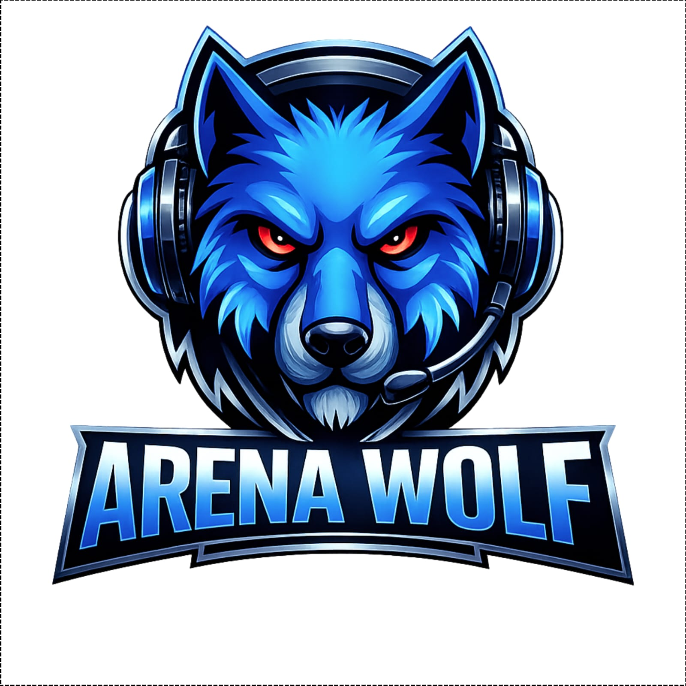

MANUAL DA MARCA
Wolf Tech · Diretrizes de identidade visual e verbal
A Wolf Tech é a matriz de tecnologia do grupo: a empresa que constrói os sistemas, a IA e a engenharia que sustentam todas as outras. A marca precisa comunicar três coisas simultaneamente — precisão técnica, postura de matilha e ambição de conglomerado.
Linhas geométricas, grid, engenharia. Nada é decorativo sem função — como o código que escrevemos.
O lobo nunca anda sozinho. A marca é plural: sete empresas, uma matriz, um alfabeto visual comum.
A marca vive no escuro — fundo profundo, azul elétrico, brilho controlado. É a estética da madrugada em que o produto nasce.
Tipografia display de presença, afirmações diretas, nada de timidez. A marca fala como quem constrói um grupo.
O símbolo é a face frontal do lobo construída em linhas geométricas ciano, envolvida por fones de ouvido — a assinatura de que somos uma empresa de tecnologia e mídia. O animal comunica instinto e matilha; o fone comunica o produto: som, sistema, software.
Regra de ouro: a marca Wolf Tech nunca aparece "apagada". Fundo claro é exceção documentada neste manual — o habitat natural da marca é o escuro.
A assinatura oficial combina o símbolo do lobo e o logotipo "WOLF TECH" em caixa alta geométrica. O símbolo dentro do "O" vira o cursor/> — o detalhe que liga marca e código.
Uso obrigatório em: site, apresentações, documentos, telas de produto, vídeo e social.

Uso excepcional: documentos impressos em branco, e-mail corporativo, materiais terceiros com fundo claro.
| Forma | Composição | Onde usar |
|---|---|---|
| Assinatura completa | Símbolo + "WOLF TECH" | Capas, rodapés oficiais, materiais institucionais |
| Símbolo isolado | Só a cabeça do lobo | Avatar, favicon, marca d'água, ícone de app |
| Logotipo isolado | Só "WOLF TECH" | Faixas horizontais estreitas (navbar, header) |
A logo precisa respirar. A área de proteção garante que nenhum elemento gráfico invada o espaço do símbolo — é o que separa marca forte de marca improvisada.
A unidade de medida é a altura do focinho do lobo (x). Ao redor da assinatura inteira, deve existir 1x de respiro livre em todas as direções — nenhum texto, ícone, foto ou borda pode invadir.
Área pontilhada = zona de exclusão de 1x ao redor da assinatura.
| Meio | Mínimo permitido | Observação |
|---|---|---|
| Digital (assinatura completa) | 90px de largura | Abaixo disso o "TECH" some — usar só o símbolo |
| Digital (símbolo isolado) | 24px | Mínimo para favicon/avatar |
| Impresso (assinatura) | 30mm de largura | Cartão, papel timbrado |
| Impresso (símbolo) | 8mm | Selo, etiqueta |
As oito proibições. Qualquer material que viole uma delas está errado — ponto final, sem discussão.
E também é proibido: recriar a logo em outra fonte · separar símbolo e texto com elementos no meio · colocar a logo dentro de molduras/bordas apertadas · usar versões antigas (lobo vermelho legado MF Paris) · aplicar sobre fotos claras sem overlay.
A cor da marca é o ciano-azul elétrico sobre a noite profunda. A paleta é fechada — nenhuma cor fora desta tabela entra em material oficial.
Proporção da paleta: ~70% noite/superfícies · ~20% branco/cromado · ~8% azul/ciano · ~2% funcionais.
Três fontes, três papéis. Qualquer texto oficial que saia dessa hierarquia está fora da marca.
WOLF TECH
Uso: logotipo, títulos de página/seção, números de destaque, chamadas de capa. Sempre caixa alta. Peso 700–900.
Subtítulos, labels e navegação
Uso: subtítulos, botões, menus, etiquetas, KPIs, cabeçalhos de tabela, badges. Caixa alta em labels; corpo em sentence case quando parágrafo.
Texto corrido, descrições e conteúdo longo — legibilidade primeiro.
Uso: parágrafos, descrições de card, tabelas, copy de e-mail/documentos. Sentence case, peso 400–600.
| Nível | Fonte | Tamanho | Cor |
|---|---|---|---|
| H1 / capa | Orbitron 900 | 28–40pt | Branco Wolf |
| H2 / seção | Orbitron 700 | 14–16pt | Azul Claro |
| H3 / bloco | Rajdhani 700 | 11–12pt caps | Cromado |
| Corpo | Inter 400/500 | 9–11pt | Branco Wolf |
| Nota / discreto | Inter 400 | 7.5–8.5pt | Cinza Mudo |
Além de logo e cor, a marca tem uma gramática visual própria — os elementos que fazem qualquer material ser reconhecível como Wolf mesmo sem a logo.
Fundo de linhas de grade 40×40px a 3–4% de opacidade azul. Está em todas as páginas deste manual — é a "mesa de engenharia" da marca.
Brilho azul suave atrás da logo e em elementos-âncora. Sempre ~0.3–0.5 de opacidade — nunca neon, nunca forte demais.
Painéis com blur e borda azul a 15% — usado em headers e modais sobre o grid.
Radius 6–14px, borda 1px azul a 15–35%. Cantos retos demais = errado; muito arredondados = errado.
Gradiente horizontal transparente→ciano→transparente — a "régua" da marca, separa seções.
Pílulas com borda fina, texto Rajdhani caps tracking largo — status, categorias, selos.
A Wolf Tech é matriz: as empresas do grupo carregam o prefixo "Wolf" e o alfabeto visual comum — mesma paleta-base, mesma tipografia, variação só na cor de acento.
| Empresa | Papel | Acento | Status |
|---|---|---|---|
| Wolf Arena | Lan house + produto vivo (app de reservas) | Azul Wolf #1A6FE8 | Ativa |
| Wolf Tech | Núcleo — software, IA, engenharia | Ciano #4DA6FF | Matriz |
| Wolf CRM | Produto comercial B2B do grupo | Azul Wolf #1A6FE8 | Em produção |
| Wolf TV | Canal de conteúdo, podcast, cobertura | Roxo #A371F7 | Em produção |
| Wolf Audiovisual | Estúdio e produção B2B | Cromado #8AB4D4 | Ativa |
| Wolf Academy | Academia de vendas interna + produto | Âmbar #F0A500 | Em breve |
| Wolf Engineering | Projetos de engenharia e AutoCAD | Cromado #8AB4D4 | Ativa |
| Turbo Açaí | Varejo alimentar da sede | Rosa/magenta próprio | Ativa |
A voz da Wolf Tech é a de quem constrói — direta, técnica quando precisa, confiante sem arrogância, e sempre em português claro.
Frases curtas, verbo antes de adjetivo. "O funil termina na entrega" — não "solução integrada de gestão do ciclo de vendas".
A marca mostra, não promete: números, demos, produto vivo. "Já roda em 5 empresas" > "líder de mercado".
Afirmações limpas sem hedge. Não usamos "talvez", "tentamos" — usamos "faz", "funciona".
Plural quando institucional ("nós construímos"), singular quando técnico. Nunca corporativo genérico.
| Dizemos | Nunca dizemos |
|---|---|
| construímos, operamos, funil, agente, matilha, noite, prova, ao vivo | sinergia, solução end-to-end, disruptivo, player de mercado |
| "funcionário digital", "o funil termina na entrega", "produto vivo" | jargão de consultoria, termos em inglês sem necessidade |
Teste rápido: se a frase cabe num site de consultoria genérica, não é Wolf. Se parece dita por quem passou a noite construindo o produto, é.
Uma linha: "Wolf Tech — a matriz de tecnologia do grupo."
Curto: "A Wolf Tech constrói o software, a IA e a engenharia por trás das empresas do grupo — e vende o que funciona aqui dentro."
Assinatura de e-mail: "Nome · Cargo · Wolf Tech · Belo Horizonte/MG"